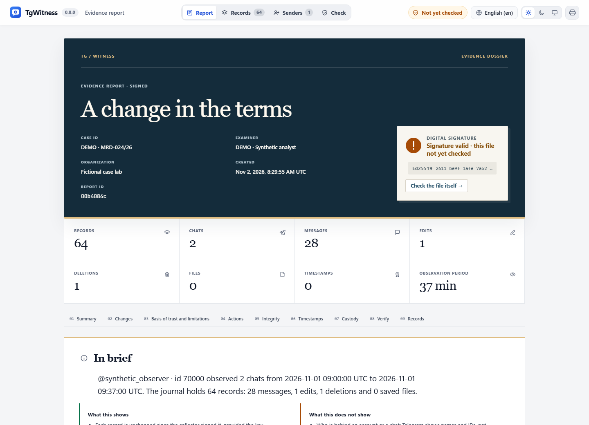
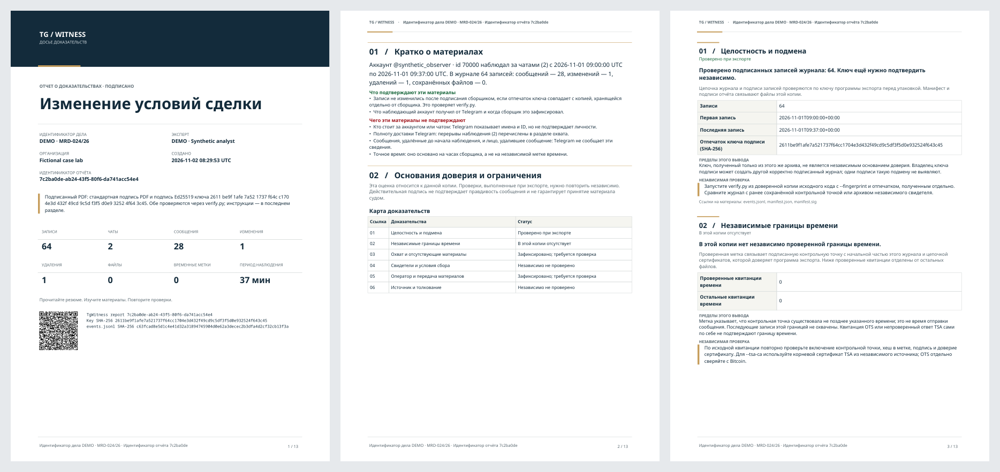

مرجع / الأدلة
تكوين التقارير والتحقق منها
تتضمن الصادرات الموقعة عوامل تصفية التقارير، وثمانية تصميمات، وإعدادات مسبقة للمحتوى، وسجلات التغييرات المحفوظة، والتقييم.
حوّل الملاحظات المختارة إلى سرد سهل القراءة للقضية: سؤالها، ونطاقها، والتغييرات المحفوظة، والرسوم البيانية، والنتائج، ومراجع المصادر. يتيح كل تقرير للمستلم وسيلة للتحقق من المواد المرسلة وفحص نطاق الجمع.
يظهر قسم «أساس الثقة والقيود» في تقارير السجل، والتسليم، والدردشة،
والحساب، والمشاركة. تستخدم ملفات PDF الخاصة بالسجل والتسليم نفس التقييم الموجود في
ملف report.json الموقع. تحتوي قوائم ملفات ZIP على case_assessment في
قائمة الملفات الموقعة. ينتقل هذا التقييم مع المواد المصدرة. تحتفظ الملاحظات
الأصلية بتوقيعاتها الحالية.
تنسيقات المستندات وترتيب القراءة#
استوديو التقارير#
افتح «التصدير» → «التكوين» و«المعاينة». انتقل عبر «البيانات» → «التصميم والمحتويات» → «المعاينة»:
- استخدم مساحة العمل بالكامل أو اختر الدردشات، والمؤلفين، وتواريخ المراقبة وفقًا للتوقيت العالمي المنسق (UTC) بشكل شامل، وأنواع الأحداث. قم بتحميل الكتالوج للبحث عن الدردشات والمؤلفين، أو أدخل معرّفات Telegram الخاصة بهم. تتطابق مرشحات المؤلفين مع معرّفات المرسلين المسجلة؛ ولا يتطابق إشعار الحذف الذي لا يحتوي على مرسل مع مرشح المؤلف.
- اختر تصميم الصفحة، ثم اختر الرسوم البيانية وتسميات المشاركين والنص الكامل و نتائجك المكتوبة. ويؤدي تغيير التصميم إلى الاحتفاظ بهذه الاختيارات.
- قم بإنشاء المعاينة. فهي تعرض الأعداد الفعلية، والنشاط، والمشاركين، وعينات السجلات، والتغييرات المحفوظة، ونطاقات أرقام الرسائل المفقودة. يؤدي تغيير أحد الخيارات إلى اعتبار المعاينة قديمة. احفظ قبل تنزيل ملف HTML، أو ملف PDF الموقّع، أو ملف JSON الموقّع، أو ملف ZIP الخاص بالأدلة.
تحتسب معاينة البيانات البادئة الكاملة والمستقرة للسجل، وليس العينة الأولية. يتم حصر الصفوف النموذجية المعروضة والقوائم الطويلة فقط؛ ويتم عرض أعدادها المحذوفة. يأخذ التصدير اللاحق لقطة مستقرة جديدة، لذا قد يؤدي التجميع المستمر إلى زيادة الأرقام. يتم تضمين النطاق والأعداد وهوية المصدر في التقرير الموقع. لا يؤدي فتح النموذج أو معاينته إلى حفظه.
اختر نسخة المستلم. تستخدم المخططات والنصوص السجلات المحددة. تصف مصطلحات «السلامة» و«الحفظ» و«التغطية» دفتر المصادر الكامل. ملف ZIP الخاص بالأدلة يحتوي على السجلات الأصلية والمرفقات. استخدم عملية تسليم محدودة عندما يتعين على المستلم تلقي البيانات المحددة والمسموح بها فقط.
اقرأ التعديلات والحذوفات والمعرفات المفقودة#
يُظهر التعديل النص المحفوظ «قبل» و«بعد» ويبرز الكلمات التي تم تغييرها. أما الحذف فيُظهر آخر نسخة تم حفظها قبل الإشعار. إذا لم يتم التقاط أي محتوى سابق، فسيشير التقرير إلى ذلك. عند تحديد التعديلات أو الحذوفات فقط، تظل الإصدارات السابقة متاحة كسياق مُصنف بشكل صريح خارج المرشحات. لا تُضاف الرسائل غير ذات الصلة إلى سجلات التغييرات هذه.
معرّفات الرسائل غير الملحوظة هي فجوات بين الأرقام المعروفة في المحادثات المختارة و نطاق المعرّفات المستمد من التواريخ. يتم فحص كل سجل مصدر معروف قبل إعلان رقم ما على أنه غير ملحوظ: لا يمكن أن يؤدي استبعاد مؤلف آخر أو نوع حدث أو تاريخ إلى إنشاء فجوة زائفة. يتم تصنيف الرسائل المحفوظة المجاورة على أنها سياق. ولا يُثبت الرقم المفقود وجود رسالة ما أو حذفها؛ حيث تظل إشعارات الحذف وعمليات إعادة الفحص غير الناجحة أنواعًا منفصلة من الأحداث.
اختر تصميمًا#
تتوفر ثمانية تصميمات للصفحات لتقارير HTML الخاصة بالسجلات والمحادثات الفردية وتقارير PDF الموقعة. وتستخدم هذه التصميمات نفس السجلات والحسابات، مع اختلاف الأغلفة، والخطوط، وعناوين الفصول، والجداول، والمسافات.
| التصميم | أسلوب القراءة |
|---|---|
| كلاسيكي | ملف تقليدي بغطاء داكن وأقسام مرقمة. |
| التحرير | صفحة عنوان بإطار زخرفي، هوامش واسعة، وقائمة فصول ضيقة. |
| ملخص | غلاف مدمج بظهر بلون كحلي، وعناوين قصيرة، وجداول متقاربة. |
| التحليلات | غلاف على غرار الاستبيان، وألواح بيانية معيارية، وأشكال ذات مسافة ثابتة بين الأحرف. |
| تقني | سجل مسطر، وقائمة مراجع مرقمة، وجداول مقارنة دقيقة. |
| نظرة عامة | غلاف بانورامي، ومسافات واسعة بين السطور، وأرقام ملخصية بارزة. |
| سلسلة القراءة | قائمة أقسام وفصول مجمعة للنتائج، والنطاق، والتغييرات، وسجل الملاحظات. |
| دفتر الأستاذ والهامش | فصول مرقمة ذات هوامش واسعة، وجداول بيانية دقيقة، ونصوص رسائل منفصلة. |
يتم حفظ التصميم لكل مساحة عمل وتسجيله في بيان التصدير الموقع. يعمل HTML دون اتصال بالإنترنت، ويدعم السمات الفاتحة والداكنة، ويتكيف مع الشاشات الضيقة واللغات المكتوبة من اليمين إلى اليسار. تستخدم ملفات PDF الأصلية الخطوط المجمعة؛ ويتضمن التصميم التحريري خط Noto Serif بموجب ترخيص SIL Open Font المرفق به. كما تنطبق سلاسل القراءة و «Ledger & margin» على نظرات عامة الحسابات ومحادثات الحسابات ونسخ المشاركة.
تحتاج ملفات PDF باللغات الصينية واليابانية والكورية أيضًا إلى خط مناسب على الخادم،
مثل Noto Sans CJK، المثبت على مستوى النظام أو الموجود في TGWITNESS_FONT_DIR.
عند عدم توفره، يحتفظ ملف ZIP بالتقارير بتنسيقي HTML وJSON.
يتضمن هذان التصميمان سجلًا قابلًا للقراءة بدون JavaScript. بالنسبة لعمليات التصدير الكبيرة، تحتوي هذه العرض على ما يصل إلى 500 سجل كامل ضمن سعة إدخال تبلغ 8 ميغابايت؛ ويحدد التقرير الحد الأقصى ويربط بالعارض الكامل وسجلات المصادر. يصف دليل الحسابات وفهرس العلاقات نفس عينة القراءة هذه، وليس جميع المشاركين. وتحتفظ مخططات السجل الكامل بنطاقها المحدد بشكل منفصل.
اختر المحتويات#
| المحتويات المحددة مسبقًا | مضمنة بشكل افتراضي |
|---|---|
| ملف القضية | النشاط، وأوقات المراقبة، والمشاركين، والمحادثات، ونص السجل. |
| ملخص | نظرة عامة على النشاط دون ترتيب المشاركين أو النص الكامل. |
| مراجعة الأنشطة | النشاط، وأوقات المراقبة، والمشاركين، والمحادثات ومحتواها، مع الإشارة إلى المصادر والأرقام الدقيقة. |
| تقرير مخصص | يمكنك تكوين مزيج خاص بك من الرسوم البيانية والنصوص المكتوبة والمعاينات. |
يؤدي تغيير الإعداد المسبق إلى الاحتفاظ بالتصميم وتفاصيل القضية والتحليل المكتوب. وتبقى فحوصات السلامة والتغطية والقيود وتعليمات التحقق في كل تصميم. تظل السجلات المصدرية الموجودة في ملف ZIP دون تغيير عند إخفاء مخطط أو نص محضر.
تحتوي «ملاحظات الفحص» الاختيارية على السؤال والطريقة والنتائج و الاستنتاج الذي كتبه مؤلف التقرير. اذكر الملف المصدر وأرقام السجلات في النتائج. يحافظ التوقيع على هذه البيانات المكتوبة إلى جانب التقرير؛ وتظل ملاحظات المصدر وتفسير المؤلف قابلة للتعريف. تُغفل عمليات التسليم المُصغَّرة هذه الملاحظات الخاصة والرسوم البيانية الكاملة للسجل. تنطبق خيارات الرسوم البيانية و الفحص على تقارير السجل.
اختر النشاط على مدار الوقت، وخريطة الحرارة لليوم/الساعة بتوقيت UTC، وتصنيفات المشاركين، وتصنيفات الدردشات وتكوين السجلات. اختر من 5 إلى 30 مجموعة مصنفة وأسماء مستعارة محايدة للمشاركين أو معرّفات الحسابات. يظهر المرسلون المجهولون والمشاركون المتبقون في صفوف منفصلة. تؤثر الأسماء المستعارة على المخططات البيانية فقط؛ ولا تزال السجلات المصدرية تحتوي على هوياتهم.
يتم تحديث معاينة التصميم من المسودة غير المحفوظة باستخدام غلاف الإنتاج، ومكونات الفحص والرسوم البيانية، وتقتصر على التطابقات الموجودة ضمن أول 50,000 سجل مصدر. معاينة البيانات أدناه تحسب التحديد الكامل. وهي صراحةً غير موقعة ولا تحتفظ بالتعديلات. تعمل أزرار «الغلاف» و«الرسوم البيانية» على تبديل أقسامها. هذه ليست معاينة PDF كاملة. يؤدي «حفظ إعدادات التقرير» إلى تطبيق الخيارات على عمليات التصدير المستقبلية؛ أما الملفات الموقعة الحالية فهي غير قابلة للتعديل. يستخدم ملف PDF الغلاف المختار، ونمط الطباعة، وتخطيط الفصول، ونفس التجميعات المحددة المستخدمة في HTML وJSON الموقّع.
يظل تقييم الموثوقية، وحدود التغطية، وتعليمات التحقق سارية. لا يؤدي إخفاء المخططات أو النص القابل للقراءة إلى إزالة صفوف المصادر الموثوقة من ملف ZIP. يتم حذف سلاسل المخططات المعطلة من ملف JSON التحليلي؛ استخدم تصديرًا محدودًا لتقييد الكشف عن سجلات المصادر.
تنطبق عوامل تصفية اختيار البيانات على تقارير السجلات؛ وتحتفظ عمليات تصدير الحسابات والمشاركات بنطاق الاستحواذ والإفصاح الخاص بها.
يتم تجميد تفضيلات التصميم/الرسوم البيانية المشتركة في عمليات تصدير الدردشات/الحسابات الجديدة ومعاينات مشاركة الحسابات. تظل إعدادات اللغة والخصوصية الخاصة بالحساب/المشاركة مستقلة؛ ولا يتم نسخ ملاحظات القضايا الخاصة وملاحظات الفحص إلى عمليات التصدير هذه. تظل تقارير الحساب و المشاركة بتنسيق HTML محمية بواسطة بيان الأرشيف الموقع الخاص بها. كما توفر «المجلة»، وعمليات تسليم «المجلة» المصغرة، ومجموعات الدردشة الفردية ملفات PDF موقعة.
ما الذي تحسبه المخططات#
يُحسب نشاط السجل وخرائط الحرارة الملاحظات الجديدة، والتاريخية، والمستردة، والمعدلة، والمحذوفة، و المفقودة عند إعادة الفحص، حسب وقت ملاحظة المجمع بالتوقيت العالمي المنسق (UTC). تُستبعد إشارات التواصل وإيصالات المرفقات. يحتسب ترتيب المشاركين فقط الملاحظات الجديدة والتاريخية والمستعادة للرسائل: لا يُعتبر المرسل هو المحرر أو المعطِل. يمكن أن تصف الملاحظات المتكررة نفس رسالة Telegram.
تحتفظ تحليلات السجلات بالعدد حسب النوع، ومراجع السجل الأول/الأخير، وملف المصدر
events.jsonl_SHA-256. تتضمن الأرقام القيم الدقيقة في صيغتي HTML وPDF. تتحول الفئات اليومية
إلى فئات شهرية بعد مرور 366 يومًا مسجلاً؛ وتجمع الرسوم البيانية هذه الفئات في 36
فترة زمنية متساوية العرض كحد أقصى. أكثر من 100,000 معرّف مميز أو 1,200 علامة شهرية
تجعل المخطط المعني غير متاح، بينما تظل الأعداد الإجمالية الدقيقة متاحة.
تحتسب مخططات اللقطات ومشاركة الحسابات فقط صفوف الرسائل غير المتعلقة بالخدمة المضمنة، باستخدام وقت الرسالة المسجل. تُحسب الإجماليات المشتركة بعد الحجب والتصفية. تستخدم هذه المخططات 90 فترة زمنية على الأكثر بتوقيت UTC ذات عرض متساوٍ وتحتفظ بما يصل إلى 10,000 قيمة تجميعية؛ ويتم الإعلان صراحةً عن الأعداد الزائدة ومطابقتها. قد تكون الفترة الأخيرة أقصر. لا تدخل التواريخ المجهولة أو غير الدقيقة في مخططات الوقت.
الفراغ في الفاصل الزمني يعني عدم وجود ملاحظات؛ راجع التغطية لمعرفة الفجوات. تصف هذه الرسوم البيانية الأنشطة المحفوظة. يظل المرسلون المجهولون فئة منفصلة، ويتم الإبلاغ عن كل فحص على حدة.
عند تضمينه، يتم حماية ملف analytics.json بواسطة تجزئات الملفات الموقعة الخاصة بالأرشيف.
يقوم ملف report.json الخاص بالسجل بتضمين نفس المجموع المحدد. يتعرف التحقق من التوقيع
على البايتات التي تم تغييرها. للتحقق من الأرقام، أعد حساب مجموعات السجل باستخدام
report_analytics.Analytics وselected، أو
مجموعات اللقطات باستخدام snapshot_analytics.collect وproject.
انطلاقًا من نسخة من المصدر، قم بإنشاء جميع التصميمات الثمانية المذكورة أعلاه من نفس المجلة الخيالية:
python tools/build_report_styles.py --output test-results/report-stylesافتح ملف index.html الناتج لمقارنة التقارير HTML الكاملة وملفات PDF الموقعة وملفات
ZIP. يستخدم كل تصميم نفس دفتر اليوميات المصدر. استخدم دليل إخراج جديدًا لكل
تشغيل حتى يتم الحفاظ على الأمثلة الموقعة سابقًا.

يبدأ ملف HTML بغلاف القضية والأرقام الرئيسية. وترتبط خريطة الأدلة المرقمة بكل نتيجة، والوقائع الداعمة لها، والقيود، والمراجعة المستقلة. وتظل السجلات القابلة للبحث ومراجع السجلات الثابتة متاحة في عارض السجلات دون اتصال بالإنترنت. يتكيف التصميم مع الشاشات الضيقة، وسواءً كان ذلك في السمات أو المتصفحات التي لا تدعم JavaScript.
يحتوي ملف PDF الموقّع على غلاف مخصص بحجم A4، ومرجع التقرير ورمز QR، وملخص تنفيذي، وخريطة للأدلة، ونتائج مرقمة، وعلامات مرجعية للوثائق. وتحدد ترويسات وتذييلات الصفحات هوية التقرير. ويحدد رمز QR هوية المادة؛ وهو ليس نتيجة تحقق مستقلة. وتكون المطبوعات من المتصفح منفصلة عن ملف PDF هذا الموقّع تشفيرياً.
يضع الجدول الزمني للمراقبة فترات المراقبة المسجلة والانقطاعات على نفس محور التوقيت العالمي المنسق (UTC). لا يُفهم من المساحات الفارغة أنها تغطية؛ فالجداول التفصيلية تحتفظ بالفترات الزمنية الدقيقة. يحتوي ملف ZIP على التقارير القابلة للقراءة، وملفات JSON الموقعة، وسجلات المصادر، وتعليمات التحقق.
قم بإنشاء ملف جديد خيالي باللغات الإنجليزية/الروسية/الألمانية مع تثبيت بيئة التطوير:
python tools/build_dossier_example.py --output test-results/my-new-dossierيحتوي كل دليل لغة على ملفات report.html وreport.pdf وreport.json و
dossier.zip. لا يتم أبدًا الكتابة فوق الدلائل النموذجية الحالية. ولا يتم استخدام أي حساب Telegram
أو خدمة طابع زمني خارجية أو اتصال شبكي لإنشائها.

قراءة حالة محددة#
بالنسبة لسجل يحتوي على 1,200 إدخال مع طابع زمني تم التحقق من صحته عند الإدخال رقم 1,000، فإن التقرير يحدد 200 إدخال لاحق خارج نطاق ذلك الطابع الزمني. وهذا يمثل الحد الأعلى لوجود نقطة تفتيش، وليس دليلاً على وقت إرسال كل رسالة . إذا فشلت ثلاثة ملفات طوابع زمنية أخرى في التحقق من صحتها أو تعذر التحقق منها، فسيتم احتسابها بشكل منفصل ولن يمكنها تقديم استنتاج إيجابي.
يجب أن يستوفي الطابع الزمني القابل للاستخدام جميع هذه الشروط: أن تتطابق بصمته مع نقطة التحقق، وأن تتسلسل توقيعاته إلى جذر TSA موثوق به في وقت الختم، وأن تتطابق توقيعات نقطة التحقق ومفتاحها وعددها ورأسها مع بادئة السجل بالضبط. لا يكفي مجرد تحليل الطابع الزمني أو امتلاك إيصال OTS. يجب على القارئ اختيار جذر TSA الموثوق به بشكل مستقل وتكرار عملية التحقق. يحتاج OTS إلى فحص تأكيد بيتكوين خاص به.
| حالة التقرير | المعنى |
|---|---|
| تم التحقق منها أثناء التصدير | قام المُصدِّر بإجراء الفحص المذكور؛ ولا تزال هناك حاجة إلى إعادة الفحص بشكل مستقل. |
| تم التسجيل؛ يلزم المراجعة | يتم تسجيل الملاحظة الأساسية أو بيان المشغل؛ ولا يُعد ذلك تأكيدًا مستقلًا. |
| غير مدرج في هذه النسخة | لا يوجد في النص أي دليل يدعم هذا الادعاء. كما أنه لا يذكر عدم وجوده في أي مكان آخر. |
| لم يتم التحقق من صحة الترجمة بشكل مستقل | لا يقدم التقرير نتيجة تحقق مستقلة. |
| غير مكتمل أو غير متوفر | المواد أو الفحص المطلوب مفقود أو غير مكتمل أو غير ناجح. |
يرجى مراجعة كل فحص على حدة، جنبًا إلى جنب مع نطاق التجميع المسجل.
ما يجب أن يحافظ عليه التكوين القوي#
- قبل الاعتماد على عملية التجميع، احتفظ ببصمة المجمع الرئيسية عبر قناة موثوقة منفصلة. قارن تلك المرجعية بمفتاح التوقيع الخاص بالتصدير.
- احتفظ بنقاط التحقق المختومة بختم زمني مستقل، وعند استخدامها، احتفظ بـ سجل الشهود خارج نطاق السيطرة الإدارية لـ «Collector». قارنها مع السجل المُصدَّر للتحقق من حدوده السابقة.
- نطاق الحصول على السجلات، والثغرات، والمرشحات، والقيود، والتغييرات في عملية الجمع. شرح الفترات المفقودة ذات الصلة بالادعاء الفعلي، مع التمييز بوضوح بين معرّفات الرسائل غير الملحوظة، وإشعارات الحذف، وعمليات إعادة التحقق غير الناجحة.
- يجب الحفاظ على ملفات ZIP الأصلية وتجزئاتها. تسجيل كل حامل، وعملية نقل، وتاريخ وغرض. الاحتفاظ ببيانات المشغل المنسوبة وملاحظات القضية المرتبطة بها.
- بالنسبة للرسائل الصوتية السرية، يجب الحفاظ على الاقتباس والتحدي، وسلسلة شهادات Intel، والقياسات، والمصدر الدقيق، وشروط التعامل مع المفاتيح، والتحقق منها بشكل مستقل. احتفظ بنتيجة التحقق من الشهادة مع العناصر التي تمت مراجعتها.
انظر نطاق التحقق للاطلاع على افتراضات الثقة والتقييم المنفصل لمزاعم المصادر، والهوية، والوقت، ونطاق التجميع.
مراجعة المستلم#
استخدم نسخة موثوقة من برنامج TgWitness وبصمة تم الحصول عليها بشكل مستقل:
python -m tgwitness.verify evidence.zip --fingerprint TRUSTED_SHA256
python -m tgwitness.verify evidence.zip --fingerprint TRUSTED_SHA256 --tsa-ca tsa-root.pem
python -m tgwitness.verify evidence.zip --fingerprint TRUSTED_SHA256 --witness witness.zip --witness-fingerprint WITNESS_SHA256 --require-witness
python -m tgwitness.verify evidence.zip --fingerprint TRUSTED_SHA256 --check-drandيجب أن يأتي ملف ZIP الخاص بـ «Witness» من مصدر موثوق به ومستقل؛ مع الحفاظ على مفتاحه ومصدره أيضًا. احتفظ بالأوامر وإصدار الأداة والمخرجات ونتائج التجزئة المدخلة التي تمت مراجعتها والأسئلة التي لم يتم حلها. التحقق من «Beacon» هو عملية فحص منفصلة عبر الإنترنت؛ ولا يتصل مُعد التقرير أبدًا بأي خدمة لمجرد عرض التقرير.
في حالة وجود نزاع حول رسالة معينة، استشهد بمرجع الأرشيف، والملف الموثوق ومرجع السجل، ثم وصف الإطار الزمني ذي الصلة، والثغرات في التغطية، والاختيار والمواد الداعمة. بالنسبة للنسخة المشتركة، راجع أيضًا التحويل المسجل ومراجعه إلى أرشيف المصدر. تظل المرشحات الخاصة وتعيينات الهوية خارج نطاق التقييم العام.
يكشف التحقق من ملف PDF الموقع عن التغييرات التي طرأت على البايتات المشمولة. احتفظ بالملف الرقمي الأصلي ونتيجة التحقق جنبًا إلى جنب مع أي لقطات شاشة أو نسخ مطبوعة للقراءة.